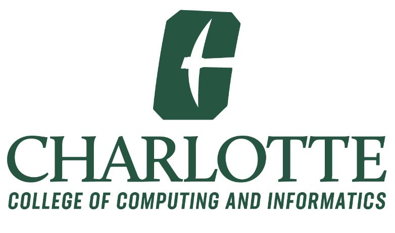

Education
The University of North Carolina at Charlotte
Master of Science in Information Technology
August 2023 - May 2025
GPA: 4.0
Concentration: Emerging Technologies
Courses: Interactive Design Studio (group leader), Information Security and Privacy, Project Management, Applied Databases, Network-based Application Development
Honors: Participant in the 4+1 program, Chancellor's List Recipient
Extracurriculars: Club for A.I. Research, Association for Computing Machinery, SACNAS, Applied Professional Practices Society
The University of North Carolina at Charlotte
Bachelor of Arts in Computer Science
August 2020 - May 2024
Concentration: Information Technology
Courses: Computer Science 1 and 2, Data Structures, Human Centered Design, Database Design and Implementation, Technical Communication, Discrete Mathematics, Biology-based Statistics 1, Design and Implementation of Object-Oriented Systems, Cognitive Science, Intro to A.I., Computing Leaders Seminar
Honors: Kid’s Chance of PA Scholarship, Dean’s List, Chancellor’s List
Extracurriculars: Club for A.I. Research, Association for Computing Machinery, SACNAS, Applied Professional Practices Society
